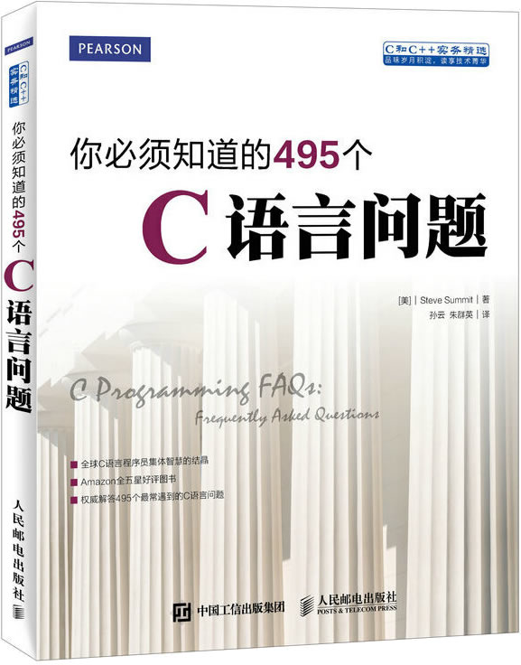

首页 > 书籍下载
《你必须知道的495个C语言问题》PDF下载（高清完整版）
|  | 作者：[美]史蒂夫 萨米特（Steve Summit） |
| 译者：孙云、朱群英 | |
| 出版时间：2023年06月01日 | |
| 出版社：人民邮电出版社 | |
| 书号ISBN：9787115376763 | |
| 总页数：262 |
这是一本非常实用的 C 语言书籍，汇集了 400 多个常见的 C 语言问题，涵盖初始化、数组、指针、字符串、多个方面，非常适合正在学习 C 语言的读者。
这里提供的是《你必须知道的495个C语言问题》的高清 PDF 下载，内容完整，附带目录标签。
对于正在学习 C 语言或者刚刚学完 C 语言的小伙伴，强烈建议阅读这本书，它能提高你对 C 语言的理解，阅读完后会让你的 C 语言基础达到中等靠上的水平。
下面是一位购买了这本书的读者给出的评价：
书很不错，都是一些平时易错或者不关注的知识点，对于深入了解C语言是很有帮助的。可以把它看成一本业余读物，没事时就看看，知识点介绍很简短，不会看了枯燥。
另外一位读者也给出了好评：这本书很好，对于想了解C语言的同志，这本书不容错过。
书籍目录
- 第1章 声明和初始化 1
- 1.1 我该如何决定使用哪种整数类型？ 1
- 1.2 为什么不精 确定义标准类型的大小？ 2
- 1.3 因为C语言没有精确定义类型的大小，所以我一般都用typedef定义int16和int32。然后根据实际的机器环境把它们定义为int、short、long等类型。这样看来，所有的问题都解决了，是吗？ 2
- 1.4 新的64位机上的64位类型是什么样的？ 3
- 1.5 这样的声明有什么问题？char *p1, p2; 我在使用p2的时候报错了。 3
- 1.6 我想声明一个指针，并为它分配一些空间，但却不行。这样的代码有什么问题？char *p; *p=malloc(10); 4
- 1.7 怎样声明和定义全局变量和函数**好？ 4
- 1.8 如何在C中实现不透明(抽象)数据类型？ 5
- 1.9 如何生成“半全局变量”，就是那种只能被部分源文件中的部分函数访问的变量？ 5
- 1.10 同一个静态(static)函数或变量的所有声明都必须包含static存储类型吗？ 6
- 1.11 extern在函数声明中是什么意思？ 6
- 1.12 关键字auto到底有什么用途？ 7
- 1.13 对于用户定义类型，typedef 和#define有什么区别？ 7
- 1.14 我似乎不能成功定义一个链表。我试过typedef struct{char *item; NODEPTR next;}* NODEPTR; 但是编译器报了错误信息。难道在C语言中结构不能包含指向自己的指针吗？ 7
- 1.15 如何定义一对相互引用的结构？ 9
- 1.16 Struct{ } x1;和typedef struct{ } x2; 这两个声明有什么区别？ 10
- 1.17 “typedef int(*funcptr)();”是什么意思？ 10
- 1.18 我有这样一组声明：typedef char *charp; const charp p; 为什么是p而不是它指向的字符为const 10
- 1.19 为什么不能像下面这样在初始式和数组维度值中使用const值？const int n=5; int a[n]; 10
- 1.20 const char *p、char const *p和char *const p有什么区别？ 10
- 1.21 怎样建立和理解非常复杂的声明？例如定义一个包含N个指向返回指向字符的指针的函数的指针的数组？ 11
- 1.22 如何声明返回指向同类型函数的指针的函数 我在设计一个状态机，用函数表示每种状态，每个函数都会返回一个指向下一个状态的函数的指针。可我找不到任何方法来声明这样的函数——感觉我需要一个返回指针的函数，返回的指针指向的又是返回指针的函数……，如此往复，以到无穷。 12
- 1.23 能否声明和传入数组大小一致的局部数组，或者由其他参数指定大小的参数数组？ 13
- 1.24 我在一个文件中定义了一个extern数组，然后在另一个文件中使用，为什么sizeof取不到数组的大小？ 13
- 1.25 函数只定义了一次，调用了一次，但编译器提示非法重声明了。 14
- 1.26 main的正确定义是什么？void main正确吗？ 15
- 1.27 我的编译器总在报函数原型不匹配的错误，可我觉得没什么问题。这是为什么？ 15
- 1.28 文件中的第一个声明就报出奇怪的语法错误，可我看没什么问题。这是为什么？ 15
- 1.29 为什么我的编译器不允许我定义大数组，如double array[256][256] 15
- 1.30 如何判断哪些标识符可以使用，哪些被保留了？ 15
- 1.31 对于没有显式初始化的变量的初始值可以作怎样的假定？如果一个全局变量初始值为“零”，它可否作为空指针或浮点零？ 18
- 1.32 下面的代码为什么不能编译 intf(){char a[]="Hello, world!";} 18
- 1.33 下面的初始化有什么问题？编译器提示“invalid initializers ”或其他信息。char *p=malloc(10); 19
- 1.34 char a[]= "string literal";和char *p="string literal"; 初始化有什么区别？当我向p[i] 赋值的时候，我的程序崩溃了。 19
- 1.35 char a{[3]}= "abc"; 是否合法？ 20
- 1.36 我总算弄清楚函数指针的声明方法了，但怎样才能初始化呢？ 20
- 1.37 能够初始化联合吗？ 20
- 第2章 结构、联合和枚举 21
- 2.1 struct x1{ };和typedef struct{ }x2; 有什么不同？ 21
- 2.2 这样的代码为什么不对？struct x{ }; x thestruct; 22
- 2.3 结构可以包含指向自己的指针吗？ 22
- 2.4 在C语言中用什么方法实现抽象数据类型**好 22
- 2.5 在C语言中是否有模拟继承等面向对象程序设计性的好方法？ 22
- 2.6 为什么声明extern f(struct x *p); 给我报了一个晦涩难懂的警告信息？ 23
- 2.7 我遇到这样声明结构的代码：struct name {int namelen; char namestr[1];};然后又使用一些内存分配技巧使namestr数组用起来好像有多个元素，namelen记录了元素个数。它是怎样工作的？这样是合法的和可移植的吗？ 23
- 2.8 我听说结构可以赋给变量也可以对函数传入和传出。为什么K&R1却明确说明不能这样做？ 25
- 2.9 为什么不能用内建的==和!=操作符比较结构？ 26
- 2.10 结构传递和返回是如何实现的？ 26
- 2.11 如何向接受结构参数的函数传入常量值？怎样创建无名的中间的常量结构值？ 26
- 2.12 怎样从/向数据文件读/写结构？ 27
- 2.13 为什么我的编译器在结构中留下了空洞？这导致空间浪费而且无法与外部数据文件进行“二进制”读写。能否关掉填充，或者控制结构域的对齐方式？ 27
- 2.14 为什么sizeof返回的值大于结构大小的期望值，是不是尾部有填充？ 28
- 2.15 如何确定域在结构中的字节偏移量？ 28
- 2.16 怎样在运行时用名字访问结构中的域？ 29
- 2.17 C语言中有和Pascal的with等价的语句吗？ 29
- 2.18 既然数组名可以用作数组的基地址，为什么对结构不能这样？ 29
- 2.19 程序运行正确，但退出时却“core dump ”(核心转储)了，怎么回事？ 29
- 2.20 结构和联合有什么区别？ 30
- 2.21 有办法初始化联合吗？ 30
- 2.22 有没有一种自动方法来跟踪联合的哪个域在使用？ 30
- 2.23 枚举和一组预处理的#define有什么不同？ 31
- 2.24 枚举可移植吗？ 31
- 2.25 有什么显示枚举值符号的容易方法吗？ 31
- 2.26 一些结构声明中的这些冒号和数字是什么意思？ 31
- 2.27 为什么人们那么喜欢用显式的掩码和位操作而不直接声明位域？ 32
- 第3章 表达式 33
- 3.1 为什么这样的代码不行？a[i]= i++; 33
- 3.2 使用我的编译器，下面的代码int i= 7; printf("%d\n", i++ * i++); 打印出49。不管按什么顺序计算，难道不该是56吗？ 33
- 3.3 对于代码int i=3; i=i++; 不同编译器给出不同的i值，有的为3，有的为4，哪个是正确的？ 34
- 3.4 有这样一个巧妙的表达式：a^= b^= a^= b; 它不需要临时变量就可以交换a和b的值。 34
- 3.5 可否用显式括号来强制执行我所需要的计算顺序并控制相关的副作用？就算括号不行，操作符优先级是否能够控制计算顺序呢？ 35
- 3.6 可是&&和||操作符呢？我看到过类似while((c = getchar()) != EOF && c != '\n')的代码…… 35
- 3.7 是否可以安全地认为，一旦&&和||左边的表达式已经决定了整个表达式的结果，则右边的表达式不会被求值？ 36
- 3.8 为什么表达式printf("%d %d", f1(), f2()); 先调用了f2？我觉得逗号表达式应该确保从左到右的求值顺序。 36
- 3.9 怎样才能理解复杂表达式并避免写出未定义的表达式？“序列点”是什么？ 36
- 3.10 在a[i] = i++;中，如果不关心a[]的哪一个分量会被写入，这段代码就没有问题，i也的确会增加1，对吗？ 38
- 3.11 人们总是说i=i++的行为是未定义的。可我刚刚在一个ANSI编译器上尝试过，其结果正如我所期望的。 38
- 3.12 我不想学习那些复杂的规则，怎样才能避免这些未定义的求值顺序问题呢？ 38
- 3.13 ++i和i++有什么区别？ 39
- 3.14 如果我不使用表达式的值，那我应该用i++还是++i来做自增呢？ 39
- 3.15 我要检查一个数是不是在另外两个数之间，为什么if(a b c)不行？ 40
- 3.16 为什么如下的代码不对？int a=1000, b=1000; long int c=a * b; 40
- 3.17 为什么下面的代码总是给出0？double degC, degF; degC= 5.0 / 9 * (degF - 32); 40
- 3.18 需要根据条件把一个复杂的表达式赋给两个变量中的一个。可以用下面这样的代码吗？((condition) a : b)= complicated_expression; 41
- 3.19 我有些代码包含这样的表达式。a b=c : d 有些编译器可以接受，有些却不能。为什么？ 41
- 3.20 “semantics of‘’change in ANSI C”的警告是什么意思？ 42
- 3.21 “无符号保护”和“值保护”规则的区别在哪里？ 42
- 第4章 指针 45
- 4.1 指针到底有什么好处？ 45
- 4.2 我想声明一个指针并为它分配一些空间，但却不行。这些代码有什么问题呢？char *p; *p =malloc(10); 45
- 4.3 *p++自增p还是p所指向的变量？ 46
- 4.4 我用指针操作int数组的时候遇到了麻烦。 46
- 4.5 我有一个char *型指针碰巧指向一些int型变量，我想跳过它们。为什么((int *)p)++; 这样的代码不行？ 47
- 4.6 为什么不能对void *指针进行算术操作？ 47
- 4.7 我有些解析外部结构的代码，但是它却崩溃了，显示出了“unaligned access”(未对齐的访问)的信息。这是什么意思？ 47
- 4.8 我有个函数，它应该接受并初始化一个指针：void f(int *ip){ static int dummy = 5; ip = &dummy;}但是当我如下调用时：int *ip; f(ip); 调用者的指针没有任何变化。 47
- 4.9 能否用void ** 通用指针作为参数，使函数模拟按引用传递参数 48
- 4.10 我有一个函数extern intf(int *); ，它接受指向int型的指针。我怎样用引用方式传入一个常数？调用f(&5);似乎不行。 49
- 4.11 C语言可以“按引用传参”吗？ 50
- 4.12 我看到了用指针调用函数的不同语法形式。到底怎么回事？ 50
- 4.13 通用指针类型是什么？当我把函数指针赋向void *类型的时候，编译通不过。 51
- 4.14 怎样在整型和指针之间进行转换？能否暂时把整数放入指针变量中，或者相反？ 51
- 4.15 我怎样把一个int变量转换为char *型？我试了类型转换，但是不行。 52
- 第5章 空指针 53
- 5.1 臭名昭著的空指针到底是什么？ 53
- 5.2 怎样在程序里获得一个空指针？ 54
- 5.3 用缩写的指针比较“if(p)”检查空指针是否有效？如果空指针的内部表达不是0会怎样？ 55
- 5.4 NULL是什么，它是怎么定义的？ 56
- 5.5 在使用非零位模式作为空指针的内部表示的机器上，NULL 是如何定义的？ 56
- 5.6 如果NULL定义成#define NULL((char *)0) ，不就可以向函数传入不加转换的NULL 了吗？ 57
- 5.7 我的编译器提供的头文件中定义的NULL为0L。为什么？ 57
- 5.8 NULL可以合法地用作函数指针吗？ 57
- 5.9 如果NULL和0作为空指针常量是等价的，那我到底该用哪一个呢？ 58
- 5.10 但是如果NULL的值改变了，比如在使用非零内部空指针的机器上，用NULL(而不是0)
- 5.11 我曾经使用过一个编译器，不使用NULL就不能编译。 58
- 5.12 我用预处理宏#define Nullptr(type)(type *)0帮助创建正确类型的空指针。 59
- 5.13 这有点奇怪：NULL可以确保是0，但空(null)指针却不一定？ 59
- 5.14 为什么有那么多关于空指针的疑惑？为什么这些问题如此频繁地出现？ 60
- 5.15 有没有什么简单点儿的办法理解所有这些与空指针有关的东西呢？ 60
- 5.16 考虑到有关空指针的所有这些困惑，要求它们的内部表示都必须为0不是更简单吗？ 60
- 5.17 说真的，真有机器用非零空指针吗，或者不同类型用不同的表示？ 61
- 5.18 运行时的整数值0转换为指针以后一定是空指针吗？ 61
- 5.19 如何访问位于机器地址0处的中断向量？如果我将指针值设为0，编译器可能会自动将它转换为非零的空指针内部表示。 62
- 5.20 运行时的“null pointer assignment”错误是什么意思？应该怎样捕捉它？ 62
- 第6章 数组和指针 63
- 6.1 我在一个源文件中定义了char a[6]，在另一个源文件中声明了extern char *a。为什么不行？ 63
- 6.2 可是我听说char a[]和char *a是等价的。是这样的吗？ 63
- 6.3 那么，在C语言中“指针和数组等价”到底是什么意思？ 64
- 6.4 既然它们这么不同，那为什么作为函数形参的数组和指针声明可以互换呢？ 65
- 6.5 为什么不能这样向数组赋值？extern char *getpass(); char str[10]; str=getpass("Enter password:"); 66
- 6.6 既然不能向数组赋值，那这段代码为什么可以呢？int f(char str[]){ if(str[0] == '\0') str="none";…} 66
- 6.7 如果你不能给它赋值，那么数组如何能成为左值呢？ 66
- 6.8 现实地讲，数组和指针的区别是什么？ 67
- 6.9 有人跟我讲，数组不过是常指针。这样讲准确吗？ 67
- 6.10 我还是很困惑。到底指针是一种数组，还是数组是一种指针？ 67
- 6.11 我看到一些“搞笑”的代码，包含5["abcdef"]这样的“表达式”。这为什么是合法的C语言表达式呢？ 68
- 6.12 既然数组引用会退化为指针，如果array是数组，那么array和&array又有什么区别呢？ 68
- 6.13 如何声明一个数组的指针？ 69
- 6.14 如何在运行时设定数组的大小？怎样才能避免固定大小的数组？ 70
- 6.15 我如何声明大小和传入的数组一样的局部数组？ 70
- 6.16 如何动态分配多维数组？ 71
- 6.17 有个很好的窍门，如果我这样写：int realarray[10]; int *array = &realarray[-1]; 我就可以把“array”当作下标从1 开始的数组。 72
- 6.18 当我向一个接受指针的指针的函数传入二维数组的时候，编译器报错了。 73
- 6.19 我怎样编写接受编译时宽度未知的二维数组的函数？ 74
- 6.20 我怎样在函数参数传递时混用静态和动态多维数组？ 74
- 6.21 当数组是函数的参数时，为什么sizeof不能正确报告数组的大小？ 76
- 6.22 如何在一个文件中判断声明为extern的数组的大小(例如，数组定义和大小在另一个文件中)？sizeof操作符似乎不行。 76
- 6.23 sizeof返回的大小是以字节计算的，怎样才能判断数组中有多少个元素呢？ 76
- 第7章 内存分配 77
- 7.1 为什么这段代码不行？char *answer; printf("Type something:\n"); gets(answer); printf("You typed \"%s\"\n", answer); 77
- 7.2 我的strcat() 不行。我试了下面的代码：char *s1= "Hello,"; char *s2= "world!"; char *s3= strcat(s1, s2);但是我得到了奇怪的结果。 78
- 7.3 但是strcat的文档说它接受两个char *型参数。我怎么知道(空间)分配的事情呢？ 78
- 7.4 我刚才试了这样的代码：char *p; strcpy(p, "abc");它运行正常。怎么回事？为什么它没有出错？ 79
- 7.5 一个指针变量分配多少内存？ 79
- 7.6 我使用fgets将文件的所有行读入一个数组，为什么读入的每一行都是**后一行的内容呢？ 79
- 7.7 我有个函数，本该返回一个字符串，但当它返回调用者的时候，返回的字符串却是垃圾信息。
- 7.8 那么返回字符串或其他聚集的正确方法是什么呢？ 81
- 7.9 为什么在调用malloc()时报出了“waring: assignment of pointer from integer lacks a cast”？ 81
- 7.10 为什么有些代码小心翼翼地把malloc返回的值转换为分配的指针类型？ 81
- 7.11 在调用malloc()的时候，错误“不能把void * 转换为int * ”是什么意思？ 82
- 7.12 我看到下面这样的代码：char *p = malloc(strlen(s) + 1); strcpy(p,s); 难道不应该是malloc ((strlen(s) + 1) * sizeof(char)) 吗？ 82
- 7.13 我为malloc写了一个小小的封装函数。它为什么不行？ 82
- 7.14 我想声明一个指针并向它分配一些内存，但是不行。这样的代码有什么问题？char *p; *p = malloc(10); 82
- 7.15 我如何动态分配数组？ 83
- 7.16 怎样判断还有多少内存？ 83
- 7.17 malloc(0)是返回空指针还是指向0个字节的指针？ 83
- 7.18 我听说有的操作系统在程序使用的时候才真正分配malloc申请的内存。这合法吗？ 83
- 7.19 为什么malloc返回了离谱的指针值？我的确读过问题7.9，而且也在调用之前包含了extern void *malloc();声明。 83
- 7.20 我用一行这样的代码分配一个巨大的数组，用于数值运算：double *array = malloc (256 *256 *sizeof(double));malloc()并没有返回空指针，但是程序运行得有些奇怪，好像改写了某些内存，或者malloc()并没有分配我申请的那么多内存。为什么？ 84
- 7.21 我的PC机有8兆内存。为什么我只能分配640K左右的内存？ 84
- 7.22 我的应用程序非常依赖数据结构的节点的动态分配，而malloc/free的代价成了瓶颈。我该怎么做？ 84
- 7.23 我的程序总是崩溃，显然发生在malloc内部的某个地方。但是我看不出哪里有问题。是malloc有bug吗？ 84
- 7.24 动态分配的内存一旦释放之后就不能再使用，是吧？ 85
- 7.25 为什么在调用free()之后指针没有变空？使用(赋值、比较)释放之后的指针有多么不安全？ 86
- 7.26 当我调用malloc()为一个函数的局部指针分配内存时，我还需要用free()显式地释放吗？ 86
- 7.27 我在分配一些结构，它们包含指向其他动态分配的对象的指针。我在释放结构的时候，还需要释放每一个下级指针吗？ 86
- 7.28 我必须在程序退出之前释放分配的所有内存吗？ 86
- 7.29 我有个程序分配了大量的内存，然后又释放了。但是从操作系统看，内存的占用率却并没有变回去。 87
- 7.30 free()怎么知道有多少字节需要释放？ 87
- 7.31 那么我能否查询malloc包，以查明可分配的**大块是多大？ 87
- 7.32 为什么sizeof不能告诉我它所指的内存块的大小？ 87
- 7.33 (像问题6.14中那样)动态分配数组之后，还能改变它的大小吗？ 88
- 7.34 向realloc()的第一个参数传入空指针合法吗？你为什么要这样做？ 89
- 7.35 calloc()和malloc()有什么区别？应该用哪一个？利用calloc 的零填充功能安全吗？free()可以释放calloc()分配的内存吗，还是需要一个cfree()？ 90
- 7.36 alloca是什么？为什么不提倡使用它？ 91
- 第8章 字符和字符串 92
- 8.1 为什么strcat(string, '!'); 不行？ 92
- 8.2 我想检查一个字符串是否跟某个值匹配。为什么这样不行？if(string == "value") 92
- 8.3 如果我可以写char a[] = "Hello, world!"; 那为什么不能写char a[14]; a = "Hello, world!"; 93
- 8.4 为什么我的strcat 不行？我试了char *s1="Hello,"; char *s2="world!"; char *s3 =strcat(s1, s2);可得到的结果很奇怪。 93
- 8.5 char a[]= "string literal"; 和char *p= "string literal"; 初始化有什么区别？当我对p[i]赋值的时候，程序崩溃了。 93
- 8.6 我怎么得到与字符相对应的数字(即ASCII 或其他字符集下的)值？反过来又该怎么做？ 94
- 8.7 C语言有类似其他语言的"substr"(提取子串)这样的函数吗？ 94
- 8.8 我将用户键入的字符串读入数组，然后再显示出来。当用户键入\n这样的序列时，为什么不能正确处理呢？ 94
- 8.9 我注意到sizeof('a')是2而不是1(即不是sizeof(char))，是不是我的编译器有问题？ 94
- 8.10 我正开始考虑多语言字符集的问题。是否有必要担心sizeof(char)会被定义为2，以便表达16位的字符集呢？ 95
- 第9章 布尔表达式和变量 96
- 9.1 C语言中布尔值该用什么类型？为什么它不是一个标准类型？我应该用#define或enum定义真值和假值吗？ 96
- 9.2 既然在C 语言中所有的非零值都被看作“真”，那是不是把TRUE 定义为1很危险？如果某个内建的函数或关系操作符“返回”不是1的其他值怎么办？ 97
- 9.3 当p是指针时，if(p)是合法的条件表达式吗？ 98
- 9.4 我该使用像TRUE和FALSE这样的符号名称还是直接用1和0来作布尔常量？ 98
- 9.5 我准备使用的一个第三方头文件定义了自己的TRUE和FALSE，它们跟我已经开发的部分不兼容。我该怎么办？ 98
- 第10章 C预处理器 99
- 10.1 我想定义一些函数式的宏，例如：#define square(x)x * x但它们并不总是正确的。为什么？ 99
- 10.2 这里有一些的预处理宏，使用它们，我可以写出更像Pascal的C代码。你觉得怎么样？ 100
- 10.3 怎么写一个交换两个值的通用宏？ 101
- 10.4 书写多语句宏的**好方法是什么？ 101
- 10.5 用typdef和预处理宏生成用户定义类型有什么区别？ 102
- 10.6 我第一次把一个程序分成多个源文件，我不知道该把什么放到.c文件，把什么放到.h文件。(“.h”到底是什么意思？) 102
- 10.7 可以在一个头文件中包含另一头文件吗？ 103
- 10.8 完整的头文件搜索规则是怎样的？ 104
- 10.9 我在文件的第一个声明就遇到奇怪的语法错误，但是看上去没什么问题。 104
- 10.10 我使用了来自两个不同的第三方库的头文件，它们都定义了相同的宏，如TRUE、FALSE、Min()和Max()等，但是它们的定义相互冲突，而且跟我在自己的头文件中的定义也有冲突。我该怎么办？ 104
- 10.11 我在编译一个程序，看起来我好像缺少需要的一个或多个头文件。谁能发给我一份？ 105
- 10.12 怎样构造比较字符串的#if预处理表达式？ 105
- 10.13 sizeof操作符可以用在#if预处理指令中吗？ 106
- 10.14 我可以像这样在#define行里使用#ifdef来定义两个不同的东西吗？ 106
- 10.15 对typedef的类型定义有没有类似#ifdef的东西？ 106
- 10.16 我如何用#if表达式来判断机器是高字节在前还是低字节在前？ 107
- 10.17 为什么在我用#ifdef关掉的代码行中报出了奇怪的语法错误？ 107
- 10.18 我拿到了一些代码，里边有太多的#ifdef。我不想使用预处理器把所有的#include 和#ifdef都扩展开，有什么办法只保留一种条件的代码呢？ 107
- 10.19 如何列出所有的预定义宏？ 107
- 10.20 我有些旧代码，试图用这样的宏来构造标识符：#define Paste(a, b) a/**/b 但是现在不行了。为什么？ 108
- 10.21 我有一个旧宏：#define CTRL(c) ('c' & 037)现在不能用了。为什么？ 108
- 10.22 为什么宏#define TRACE(n) printf("TRACE: \%d\n", n) 报出警告“macro recement within a string literal ”？它似乎把TRACE(count);扩展成了printf("TRACE: \%d\count", count); 109
- 10.23 如何在宏扩展的字符串字面量中使用宏参数？ 109
- 10.24 我想用ANSI 的“字符串化”预处理操作符#将符号常量的值放入消息中，但它总是对宏名称而不是它的值进行字符串化。这是什么原因？ 109
- 10.25 我想用预处理器做某件事情，但却不知道如何下手。 110
- 10.26 怎样写可变参数宏？如何用预处理器“关掉”具有可变参数的函数调用？ 110
- 10.27 如何在通用的调试宏中包含__FILE__和__LINE__宏？ 111
- 第11章 ANSI/ISO标准C 113
- 11.1 什么是“ANSI C标准”？ 113
- 11.2 如何得到一份标准的副本？ 114
- 11.3 我在哪里可以找到标准的更新？ 115
- 11.4 为什么我的ANSI编译器对用float声明的参数会警告类型不匹配？ 115
- 11.5 能否混用旧式的和新型的函数语法？ 116
- 11.6 为什么下述声明报出了一个奇怪的警告信息“Struct X declared inside parameter list”？ extern int f(struct x *p); 116
- 11.7 有个问题一直困扰着我，它是由这一行printf ("%d", n); 导致的，因为n是个long int型。难道 ANSI 的函数原型不能检查这种函数的参数不匹配问题吗？ 116
- 11.8 我听说必须在调用printf之前包含stdio.h。为什么？ 117
- 11.9 为什么不能在初始化和数组维度中使用const值？例如const int n = 5; int a[n]; 117
- 11.10 “const char *p”、“char const *p ”和“char * const p ”有何区别？ 117
- 11.11 为什么不能向接受const char ** 的函数传入char **？ 118
- 11.12 我这样声明：typedef char * charp; const charp p; 为什么是p而不是它所指向的字符为const？ 118
- 11.13 能否通过将main声明为void来关掉“main没有返回值”的警告？ 119
- 11.14 main()的第3个参数envp是怎么回事？ 120
- 11.15 我觉得把main()声明为void也不会失败，因为我调用了exit()而不是return，况且我的操作系统也忽略了程序的退出/返回状态。 120
- 11.16 那么到底会出什么问题？真的有什么系统不支持void main()吗？ 120
- 11.17 为什么以前流行的那些C 语言书总是使用void main()？ 120
- 11.18 在main()中调用exit(status)和返回同样的status真的等价吗？ 121
- 11.19 我试图用ANSI“字符串化”预处理操作符'#'向信息中插入符号常量的值，但它字符串化的总是宏的名字而不是它的值。为什么？ 121
- 11.20 警告信息“warning: macro recement within a string literal”是什么意思？ 121
- 11.21 为什么在我用#ifdef去掉的代码里出现了奇怪的语法错误？ 122
- 11.22 #pragma是什么，有什么用？ 122
- 11.23 “#pragma once”什么意思？我在一些头文件中看到了它。 122
- 11.24 char a[3] = "abc";合法吗？它是什么意思？ 123
- 11.25 既然对数组的引用会退化为指针，那么，如果array是数组，array和&array之间有什么区别呢？ 123
- 11.26 为什么我不能对void *指针进行算术运算？ 123
- 11.27 memcpy()和memmove() 有什么区别？ 124
- 11.28 malloc(0)有什么用？返回一个空指针还是指向0字节的指针？ 124
- 11.29 为什么ANSI 标准规定了外部标识符的长度和大小写限制？ 125
- 11.30 noalias是怎么回事？在它身上发生了什么？ 125
- 11.31 为什么我的编译器对**简单的测试程序都报出了一大堆的语法错误？对这段代码的第一行就报错了：main(int argc. char **argv) { return0; } 125
- 11.32 为什么有些 ASNI/ISO 标准库函数未定义？我明明使用的就是ANSI 编译器。 126
- 11.33 谁有可以在旧的C 程序和ANSI C 之间相互转换的工具，或者自动生成原型的工具？ 127
- 11.34 为什么声称兼容ANSI 的编译器不能编译这些代码？我知道这些代码是 ANSI 的，因为gcc 可以编译。 127
- 11.35 人们好像有些在意实现定义的(implementation-defined)、不确定的(unspecified)和未定义的(undefined) 行为的区别。它们的区别到底在哪里？ 128
- 11.36 一个程序“合法(legal)”、“有效(valid)”或“符合标准的”(conforming )到底是什么意思？ 128
- 11.37 我很吃惊，ANSI 标准有那么多未定义的东西。标准的唯 一任务不就是让这些东西标准化吗？ 129
- 11.38 有人说i=i++的行为是未定义的，但是我刚在一个兼容ANSI 的编译器上测试，得到了我希望的结果。它真的是未定义的吗？ 129
- 第12章 标准输入输出库 130
- 12.1 这样的代码有什么问题？char c; while((c = getchar()) != EOF) 130
- 12.2 我有个读取直到EOF的简单程序，但是我如何才能在键盘上输入那个“\EOF”呢？我看stdio.h 中定义的EOF 是-1，是不是说我该输入-1？ 131
- 12.3 为什么这些代码把**后一行复制了两遍？while(!feof(infp)){fgets(buf, MAXLINE, infp); fputs(buf, outfp);} 131
- 12.4 我用fgets将文件的每行内容读入指针数组。为什么结果所有的行都是**后一行的内容呢？ 132
- 12.5 我的程序的屏幕提示和中间输出有时没有在屏幕上显示，尤其是当我用管道通过另一个程序输出的时候。为什么？ 132
- 12.6 我怎样才能不等待回车键而一次输入一个字符？ 132
- 12.7 如何在printf 的格式串中输出一个'%'字符？我试过\%，但是不行。 132
- 12.8 为什么这么写不对？long int n = 123456; printf("%d\n", n); 133
- 12.9 有人告诉我不能在printf 中使用%lf。为什么printf() 用%f输出double 型，而scanf 却用%lf 呢？ 133
- 12.10 对于size_t 那样的类型定义，当我不知道它到底是long 还是其他类型的时候，我应该使用什么样的printf格式呢？ 134
- 12.11 如何用printf 实现可变的域宽度？就是说，我想在运行时确定宽度而不是使用%8d？ 134
- 12.12 如何输出在千位上用逗号隔开的数字？货币格式的数字呢？ 135
- 12.13 为什么scanf("%d", i) 调用不行？ 136
- 12.14 为什么char s[30]; scamf("%s", s); 不用&也可以？我原以为传给scanf的每个变量都要带&。 136
- 12.15 为什么这些代码不行？double d; scanf("%f", &d); 136
- 12.16 为什么这段代码不行？short int s; scanf("%d", &s); 136
- 12.17 怎样在scanf 格式串中指定可变的宽度？ 136
- 12.18 怎样从定格式的数据文件中读取数据？怎样读入10个float 而不用使用包含10次%f的奇怪格式？如何将一行的任意多个域读入一个数组中？ 137
- 12.19 我像这样用"%d\n"调用scanf 从键盘读取数字：int n; scanf("%d\n",&n); printf("you typed %d\ n", n);好像要多输入一行才返回。为什么？ 138
- 12.20 我用scanf 和%d读取一个数字，然后再用gets() 读取字符串，但是编译器好像跳过了gets() 调用！ 139
- 12.21 我发现如果坚持检查返回值以确保用户输入的是我期待的数值，则scanf 的使用会安全很多。但有的时候好像会陷入无限循环。为什么？ 139
- 12.22 为什么大家都说不要使用scanf？那我该用什么来代替呢？ 140
- 12.23 我怎样才知道对于任意的sprintf 调用需要多大的目标缓冲区？怎样才能避免sprintf 目标缓冲区溢出？ 141
- 12.24 sprintf的返回值是什么？是int 还是char *？ 142
- 12.25 为什么大家都说不要使用gets？ 142
- 12.26 我觉得我应该在一长串的printf 调用之后检查errno ，以确定是否有失败的调用。为什么当我将输出重定向到文件的时候会输出奇怪的“printf failed: Not a typewriter ”信息？ 142
- 12.27 fgetops/fsetops和ftell/fseek之间有什么区别？fgetops和fsetops 到底有什么用处？ 143
- 12.28 如何清除用户的多余输入，以防止在下一个提示符下读入？用fflush(stdin) 可以吗？ 143
- 12.29 我写了一个函数用来打开文件：myfopen(char *filename, FILE *fp){fp = fopen(filename, "r");}可我这样调用的时候：FILE *infp; myfopen("filename.dat", infp);，infp 指针并
- 12.30 连一个**简单的fopen调用都不成功！这个调用有什么问题？FILE *fp = fopen(filename, 'r'); 145
- 12.31 为什么我不能用完整路径名打开一个文件？这个调用总是失败：fopen("c:\newdir\ file. dat", "r"); 145
- 12.32 我想用fopen模式"r+"打开一个文件，读出一个字符串，修改之后再写入，从而就地更新一个文件。可是这样不行。为什么？ 145
- 12.33 如何在文件中间插入或删除一行(一条记录)？ 145
- 12.34 怎样从打开的流中恢复文件名？ 145
- 12.35 怎样在程序里把stdin或stdout重定向到文件？ 146
- 12.36 一旦使用freopen之后，怎样才能恢复原来的stdout (或stdin)？ 146
- 12.37 如何判断标准输入或输出是否经过了重定向，即是否在命令行上使用了“”或“”？ 147
- 12.38 我想写个像"more"那样的程序。怎样才能在stdin 被重定向之后再回到交互键盘？ 147
- 12.39 怎样同时向两个地方输出，如同时输出到屏幕和文件？ 147
- 12.40 我希望按字节在内存和文件之间直接读写数字，而不像fprintf和fscanf进行格式化。我该怎么办？ 148
- 12.41 怎样正确地读取二进制文件？有时看到0x0a和0x0d容易混淆，而且如果数据中包含0x1a的话，我好像会提前遇到EOF。 148
- 12.42 我在写一个二进制文件的“过滤器”，但是stdin和stdout却被作为文本流打开了。怎样才能把它们的模式改为二进制？ 148
- 12.43 文本和二进制输入输出有什么区别？ 149
- 12.44 如何在数据文件中读写结构？ 149
- 12.45 怎样编写符合旧的二进制数据格式的代码？ 149
- 第13章 库函数 151
- 13.1 怎样把数字转为字符串(与atoi相反)？有itoa函数吗？ 151
- 13.2 为什么strncpy不能总在目标串放上终止符'\0'？ 152
- 13.3 C 语言有类似于其他语言中的“substr ”(取出子串)的例程吗？ 152
- 13.4 怎样把一个字符串中所有字符转换成大写或小写？ 153
- 13.5 为什么有些版本的toupper对大写字符会有奇怪的反应？为什么有的代码在调用toupper 前先调用islower？ 153
- 13.6 怎样将字符串分割成用空白分隔的字段？怎样实现类似main 处理argc和argv的过程？ 153
- 13.7 哪里可以找到处理正则表达式或通配符匹配的代码？ 155
- 13.8 我想用strcmp作为比较函数，调用qsort对一个字符串数组排序，但是不行。为什么？ 156
- 13.9 我想用qsort()对一个结构数组排序。我的比较函数接受结构指针，但是编译器认为这个函数不是qsort需要的类型。我要怎样转换这个函数指针才能避免这样的警告？ 156
- 13.10 怎样对一个链表排序？ 158
- 13.11 怎样对大于内存容量的数据排序？ 158
- 13.12 怎样在C 程序中取得当前日期或时间？ 159
- 13.13 我知道库函数localtime可以把time_t转换成结构struct tm，而ctime可以把time_t转换成为可打印的字符串。怎样才能进行反向操作，把struct tm或一个字符串转换成time_t？ 159
- 13.14 怎样在日期上加n天？怎样取得两个日期的时间间隔？ 160
- 13.15 怎么生成一个随机数？ 162
- 13.16 怎样获得某一范围内的随机整数？ 163
- 13.17 每次执行程序，rand都返回相同的数字序列。为什么？ 164
- 13.18 我需要随机的真/假值，所以我就直接用rand()%2，可是我得到交替的0, 1, 0, 1, 0 …。为什么？ 164
- 13.19 如何获取根本不重复的随机数？ 165
- 13.20 怎样产生正态分布或高斯分布的随机数？ 165
- 13.21 我在移植一个程序，里边调用了一个函数drand48 ，而我的库又没有这个。这是个什么函数？ 167
- 13.22 exit(status)是否真的跟从main 函数返回status 等价？ 168
- 13.23 memcpy和memmove 有什么区别？ 168
- 13.24 我想移植这个旧程序。为什么报出这些“undefined external”错误：index 、rindex 、bcopy 、bcmp 、bzero ？ 168
- 13.25 我不断得到库函数未定义错误，但是我已经包含了所有用到的头文件了。 168
- 13.26 虽然我在连接时明确地指定了正确的函数库，我还是得到库函数未定义错误。 168
- 13.27 一个**简单的程序，不过在一个窗口里打印出“Hello,World”，为什么会编译出巨大的可执行代码(数百K)？我该少包含一些头文件吗？ 169
- 13.28 连接器报告_end未定义代表什么意思？ 169
- 13.29 我的编译器提示printf未定义！这怎么可能？ 169
- 第14章 浮点运算 170
- 14.1 一个float变量赋值为3.1时，为什么printf输出的值为3.0999999？ 170
- 14.2 我想计算一些平方根，我把程序简化成这样：main(){printf ("%f\h", sqrt(144.)); 可得到的结果却是疯狂的数字。为什么？ 170
- 14.3 我想做一些简单的三角函数运算，也包含了math.h ，但连接器总是提示sin、cos这样的函数未定义。为什么？ 171
- 14.4 我的浮点数计算程序表现得很奇怪，在不同的机器上给出了不同的结果。为什么？ 171
- 14.5 有什么好的方法来检查浮点数在“足够接近”情况下的相等？ 171
- 14.6 怎样取整？ 172
- 14.7 为什么C语言不提供乘幂的操作符？ 173
- 14.8 为什么我机器上的math.h没有预定义常量M_PI？ 173
- 14.9 怎样将变量置为IEEE NaN(“Not a Number”)或检测变量是否为NaN及其他殊值？ 173
- 14.10 如何简洁地处理浮点异常？ 174
- 14.11 在C语言中如何很好地实现复数？ 174
- 14.12 我要寻找一些实现以下功能的程序源代码：快速傅立叶变换(FFT)、矩阵算术(乘法、求逆等函数)、复数算术。 175
- 14.13 Turbo C的程序崩溃，显示错误为“floating point formats not linked”(浮点格式未连接)。我还缺点儿什么呢？ 175
- 第15章 可变参数列表 176
- 15.1 为什么调用printf前必须要包含stdio.h？ 176
- 15.2 为什么%f可以在printf参数中同时表示float和double？它们难道不是不同类型吗？ 177
- 15.3 我遇到了一个令人十分受挫的问题，后来发现是这行代码造成的：printf("%d", n);原来n 是longint型。难道ANSI的函数原型不就是用来防止这类的参数类型不匹配吗？ 177
- 15.4 怎样写一个接受可变参数的函数？ 177
- 15.5 怎样写一个函数，像printf那样接受一个格式串和可变参数，然后再把参数传给printf去完成大部分工作？ 180
- 15.6 怎样写类似scanf的函数，再把参数传给scanf去完成大部分工作？ 180
- 15.7 我用的是ANSI前的编译器，没有stdarg.h文件。我该怎么办？ 181
- 15.8 怎样知道实际上有多少个参数传入函数？ 182
- 15.9 为什么编译器不允许我定义一个没有固定参数项的可变参数函数？ 182
- 15.10 我有个接受float型的变参函数，为什么va_arg(argp, float)却不行？ 183
- 15.11 为什么va_arg不能得到类型为函数指针的参数？ 183
- 15.12 怎样实现一个可变参数函数，它把参数再传给另一个可变参数函数？ 184
- 15.13 怎样调用一个在运行时才构建参数列表的函数？ 186 第16 章 奇怪的问题 187
- 16.1 为什么这个循环只执行了一次？for(i=start;i end ; i ++);{printf("%d\n",i);} 187
- 16.2 遇到不可理解的不合理语法错误，似乎大段的程序没有编译。 187
- 16.3 为什么过程调用不起作用？编译器似乎直接跳过去了。 187
- 16.4 程序在执行之前就崩溃了！(用调试器单步跟踪，在main函数的第一个语句之前就死了。)为什么？ 188
- 16.5 程序执行正确，但退出时在main函数的**后一个语句之后崩溃了。为什么会这样？ 188
- 16.6 程序在一台机器上运行完 美，但在另一台上却得到怪异的结果。更奇怪的是，增加或去除调试的打印语句，就改变了症状…… 188
- 16.7 为什么下面的代码会崩溃？char *p = "hello, world!"; p[0] = 'H'; 189
- 16.8 我有些代码是用来解析外部结构的，但它却崩溃了，报了“unaligned access ”(未对齐的访问)错误。这是什么意思？ 190
- 16.9 “Segmentation violation”、“Bus error”和“General protection fault”是什么意思？ 191
- 第17章 风格 192
- 17.1 什么是C**好的代码布局风格？ 192
- 17.2 如何在源文件中合理分配函数？ 193
- 17.3 用if(!strcmp(s1, s2))比较两个字符串是否相等是个好风格吗？ 193
- 17.4 为什么有的人用if(0== x)而不是if(x== 0)？ 193
- 17.5 为什么有些代码在每次调用printf 前增加了类型转换(void)？ 194
- 17.6 既然NULL和0都是空指针常量，我到底该用哪一个？ 194
- 17.7 是该用TRUE和FALSE这样的符号名称还是直接用1和0来作布尔常量？ 194
- 17.8 什么是“匈牙利表示法”(Hungarian Notation )？是否值得一试？ 194
- 17.9 哪里可以找到“Indian Hill Style Guide ”及其他编码标准？ 194
- 17.10 有人说goto是邪恶的，永远都不该用它。这是否太极 端了？ 195
- 17.11 人们总是说良好的风格很重要，但当他们使用良好的风格写出清晰易读的程序后，又发现程序的效率似乎降低了。既然效率那么重要，是否可以为了效率牺牲一些风格和可读性呢？ 196
- 第18章 工具和资源 197
- 18.1 能否列一个常用工具列表？ 197
- 18.2 怎样捕获棘手的malloc问题？ 198
- 18.3 有什么免费或便宜的编译器可以使用？ 198
- 18.4 刚刚输入完一个程序，但它表现得很奇怪。你能发现有什么错误的地方吗？ 199
- 18.5 如何关掉lint对每个malloc调用报出的“warning: possible pointer alignment problem”警告消息？ 199
- 18.6 哪里可以找到兼容ANSI的lint？ 199
- 18.7 难道ANSI函数原型说明没有使lint过时吗？ 199
- 18.8 网上有哪些C语言的教程或其他资源？ 200
- 18.9 哪里可以找到好的源代码实例，以供研究和学习？ 201
- 18.10 有什么好的学习C语言的书？有哪些高 级的书和参考？ 201
- 18.11 哪里能找到K&R的练习答案？ 201
- 18.12 哪里能找到Numerical Recipes in C 、Plauger的The Standard C Library或Kernighan和Pike的The UNIX Programming Enviroment等书里的源码？ 201
- 18.13 哪里可以找到标准C函数库的源代码？ 202
- 18.14 是否有一个在线的C参考指南？ 202
- 18.15 我需要分析和评估表达式的代码。从哪里可以找到？ 202
- 18.16 哪里可以找到C的BNF或YACC语法？ 202
- 18.17 谁有C编译器的测试套件？ 203
- 18.18 哪里有一些有用的源代码片段和例子的收集？ 203
- 18.19 我需要执行多精度算术的代码。 203
- 18.20 在哪里和怎样取得这些可自由发布的程序？ 203
- 第19章 系统依赖 205
- 19.1 怎样从键盘直接读入字符而不用等回车键？怎样防止字符输入时的回显？ 205
- 19.2 怎样知道有未读的字符(如果有，有多少)？另外，如何在没有字符的时候不阻塞读入？ 209
- 19.3 怎样显示一个在原地更新自己的百分比或“旋转棒”的进度指示器？ 209
- 19.4 怎样清屏？怎样反色输出？怎样把光标移动到指定的x, y位置？ 210
- 19.5 怎样读入方向键、功能键？ 210
- 19.6 怎样读入鼠标输入？ 211
- 19.7 怎样做串口(“comm”)的输入输出？ 211
- 19.8 怎样直接输出到打印机？ 211
- 19.9 怎样发送转义字符序列控制终端或其他设备？ 211
- 19.10 怎样做图形？ 212
- 19.11 怎样显示GIF和JPEG图像？ 212
- 19.12 怎样检验一个文件是否存在？如果请求的输入文件不存在，我希望向用户提出警告。 212
- 19.13 怎样在读入文件前，知道文件大小？ 213
- 19.14 怎样得到文件的修改日期和时间？ 213
- 19.15 怎样原地缩短一个文件而不用清除或重写？ 213
- 19.16 怎样在文件中插入或删除一行(或一条记录)？ 214
- 19.17 怎样从一个打开的流或文件描述符得到文件名？ 214
- 19.18 怎样删除一个文件？ 214
- 19.19 怎样复制文件？ 215
- 19.20 为什么用了详尽的路径还不能打开文件？下面的代码会返回错误。Fopen("c:\newdir\file.dat", "r") 215
- 19.21 fopen不让我打开文件"$HOME/.profile"和"~/.myrcfile"。 215
- 19.22 怎样制止MS-DOS下令人的“Abort，Retry，Ignore ”信息？ 215
- 19.23 遇到“Too many open files(打开文件太多)”的错误，怎样增加同时打开文件的允许数目？ 215
- 19.24 如何得到磁盘的可用空间大小？ 216
- 19.25 怎样在C语言中读入目录？ 216
- 19.26 如何创建目录？如何删除目录(及其内容)？ 217
- 19.27 怎样找出系统还有多少内存可用？ 217
- 19.28 怎样分配大于64K的数组或结构？ 217
- 19.29 错误信息“DGROUP data allocation exceeds 64K(DGROUP 数据分配内存超过64K)”什么意思？我应该怎么做？我以为使用了大内存模型，就可以使用大于64K的数据！ 217
- 19.30 怎样访问位于某定地址的内存(内存映射的设备或图形显示内存)？ 218
- 19.31 如何访问机器地址0处的中断向量？如果将指针设为0，编译器可能把它转成一个非零的内部空指针值。 218
- 19.32 怎样在一个C程序中调用另一个程序(独立可执行的程序或系统命令)？ 219
- 19.33 如果运行时才知道要执行的命令的参数(文件名等)，应该如何调用system？ 219
- 19.34 在MS-DOS上如何得到system返回的准确错误状态？ 220
- 19.35 怎样调用另一个程序或命令，然后获取它的输出？ 220
- 19.36 怎样才能发现程序自己的执行文件的全路径？ 220
- 19.37 怎样找出和执行文件在同一目录的配置文件？ 221
- 19.38 进程如何改变它的调用者的环境变量？ 221
- 19.39 如何打开命令行给出的文件并解析选项？ 221
- 19.40 exit(status)是否真的和从main函数返回同样的status等价？ 221
- 19.41 怎样读入一个对象文件并跳跃到其中的函数？ 221
- 19.42 怎样以小于1秒的精度延时或计算用户响应时间？ 222
- 19.43 怎样捕获或忽略control-C这样的键盘中断？ 222
- 19.44 怎样简洁地处理浮点异常？ 223
- 19.45 怎样使用socket？如何联网？如何写客户/服务器程序？ 223
- 19.46 怎样调用BIOS函数？如何写ISR？如何创建TSR？ 224
- 19.47 什么是“near”和“far”指针？ 224
- 19.48 我不能使用这些非标准、依赖系统的函数，程序需要兼容ANSI! 224
- 19.49 为什么这些内容没有在C语言中进行标准化？任何现实程序都会用到这些东西。 224
- 第20章 杂项 226
- 20.1 怎样从函数返回多个值？ 226
- 20.2 用什么数据结构存储文本行**好？我开始用固定大小的char型数组的数组，但是有很多局限。 227
- 20.3 怎样打开命令行提到的文件并处理参数？ 229
- 20.4 如何正确地使用errno？ 231
- 20.5 怎样写数据文件，使之可以在不同字大小、字节顺序或浮点格式的机器上读入？ 232
- 20.6 怎样用char *指针指向的函数名调用函数？ 232
- 20.7 如何操作各个位？ 233
- 20.8 怎样实现位数组或集合？ 234
- 20.9 怎样判断机器的字节顺序是高字节在前还是低字节在前？ 235
- 20.10 怎样调换字节？ 236
- 20.11 怎样将整数转换到二进制或十六进制？ 237
- 20.12 可以使用二进制常数(类似0b101010这样的东西)吗？printf有二进制的格式说明符吗？ 237
- 20.13 用什么方法计算整数中为1的位的个数**高效？ 238
- 20.14 怎样提高程序的效率？ 238
- 20.15 指针真的比数组快吗？函数调用会拖慢程序多少？++i比i=i+1快吗？ 240
- 20.16 用移位操作符替换乘法和除法是否有价值？ 240
- 20.17 人们说编译器优化得很好，我们不再需要为速度而写汇编了，但我的编译器连用移位代替i/=2都做不到。 240
- 20.18 怎样不用临时变量而交换两个值？ 241
- 20.19 switch语句和if/else链哪个更高效？ 241
- 20.20 是否有根据字符串进行条件切换的方法？ 241
- 20.21 是否有使用非常量case行标的方法(如范围或任意的表达式)？ 242
- 20.22 return语句外层的括号是否真的可选择？ 243
- 20.23 为什么C语言的注释不能嵌套？怎样注释掉含有注释的代码？引号包含的字符串内的注释是否合法？ 243
- 20.24 为什么C语言的操作符不设计得更全面一些？好像还缺了一些^^、&&=和-=这样的操作符。 244
- 20.25 C语言有循环移位操作符吗？ 244
- 20.26 C是个伟大的语言还是别的什么东西？哪个其他语言可以写出像a+++++b这样的代码？ 244
- 20.27 如果赋值操作符是:=，是不是就不容易意外地写出if(a=b)了？ 245
- 20.28 C语言有和Pascal 的with等价的语句吗？ 245
- 20.29 为什么C语言没有嵌套函数？ 245
- 20.30 assert是什么？如何使用？ 246
- 20.31 怎样从C中调用FORTRAN(C++、BASIC、Pascal、Ada、LISP)的函数？反之如何？ 246
- 20.32 有什么程序可以将Pascal或FORTRAN(或LISP、Ada、awk、“老”C)程序转化为C程序？ 246
- 20.33 C++是C的超集吗？可以用C++编译器来编译C代码吗？ 247
- 20.34 我需要用到“近似”的strcmp例程，比较两个字符串的近似度，并不需要完全一样。有什么好办法？ 247
- 20.35 什么是散列法？ 248
- 20.36 如何生成正态或高斯分布的随机数？ 248
- 20.37 如何知道某个日期是星期几？ 249
- 20.38 (year % 4== 0)是否足以判断闰年？2000年是闰年吗？ 250
- 20.39 为什么tm结构中的tm_sec的范围是0到61，暗示一分钟有62秒？ 250
- 20.40 一个难题：怎样写一个输出自己源代码的程序？ 250
- 20.41 什么是“达夫设备”(Duff’s Device)？ 251
- 20.42 下届国际C语言混乱代码竞赛(International Obfuscated C Code Contest，IOCCC)什么时候进行？哪里可以找到当前和以前的获胜代码？ 251
- 20.43 K&R1提到的关键字entry是什么？ 252
- 20.44 C的名字从何而来？ 252
- 20.45 “char”如何发音？ 252
- 20.46 “lvalue”和“rvalue”代表什么意思？ 252
- 20.47 哪里可以获得本书的在线版？ 252
书籍下载
一键登录，免费下载完整版 PDF，文件名称：《你必须知道的495个C语言问题》.pdf